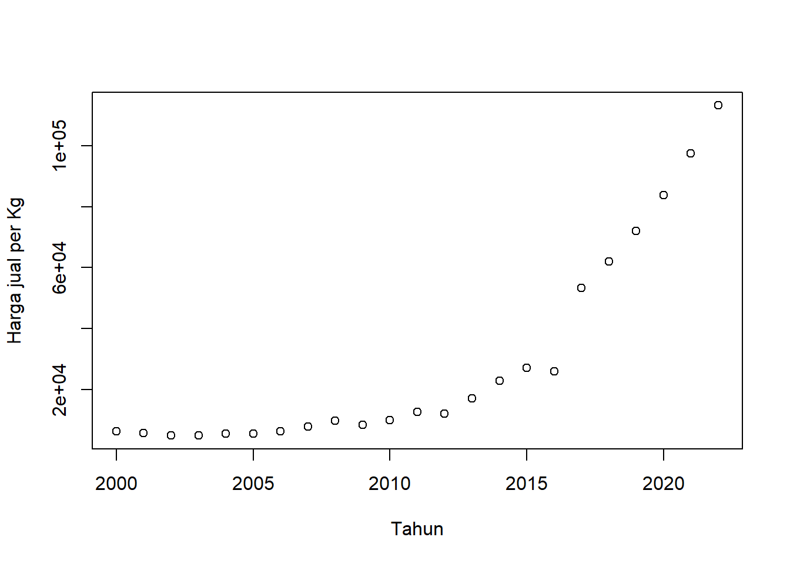

setwd("D:/METOPEL UAS/KEI METOPEL")
library(readxl)
library(tidyverse)
library(kableExtra)Analisis Pengaruh Harga dan Nilai tukar terhadap Ekspor Kayu Manis Indonesia ke Amerika Serikat.
Metode Penelitian Politeknik APP Jakarta

0.1 Pendahuluan
0.1.1 Latar belakang
Indonesia adalah produsen utama kayu manis di dunia dan Amerika Serikat merupakan salah satu tujuan ekspor utama. Dalam penelitian ini, kita akan menganalisis pengaruh nilai tukar, harga jual, dan total produksi kayu manis dalam negeri terhadap volume ekspor kayu manis Indonesia ke Amerika.
Nilai tukar dan total produksi kayu manis dalam negeri telah ditemukan memiliki pengaruh signifikan terhadap ekspor kayu manis Indonesia ke Amerika Serikat. Namun, harga jual kayu manis tidak berpengaruh signifikan terhadap ekspor.
Metode yang digunakan dalam analisis ini adalah regresi linear berganda. Regresi linear berganda adalah model regresi yang melibatkan lebih dari satu variabel independen. Dalam konteks ini, variabel independen adalah nilai tukar, harga jual, dan total produksi kayu manis dalam negeri, sedangkan variabel dependen adalah volume ekspor kayu mani.
Dengan menggunakan metode ini, kita dapat mengetahui seberapa besar pengaruh variabel independen terhadap variabel dependen.
Komoditas kayu manis Indonesia dapat memasuki pasar Amerika karena beberapa alasan. Pertama, kayu manis adalah rempah yang memiliki banyak manfaat, seperti untuk bahan makanan, minuman, obat-obatan, dan industri parfum. Kedua, Indonesia memiliki luas areal tanaman kayu manis yang cukup besar dan produktivitas yang meningkat. Ketiga, produk kayu manis Indonesia memiliki kualitas yang baik, sehingga dapat memenuhi standar dan kebutuhan pasar Amerika. Keempat, meski harga dan nilai tukar memiliki pengaruh, namun kayu manis merupakan produk yang bersifat inelastis, artinya perubahan harga tidak mempengaruhi kuantitas permintaan di negara tujuan.
0.1.2 Ruang lingkup
Ruang lingkup penelitian ini meliputi:
Objek Penelitian: Penelitian ini berfokus pada komoditas kayu manis yang diekspor oleh Indonesia ke Amerika Serikat.
Variabel Penelitian: Variabel yang dianalisis dalam penelitian ini adalah nilai tukar, harga jual, dan total produksi kayu manis dalam negeri sebagai variabel independen, serta volume ekspor kayu manis sebagai variabel dependen.
Metode Analisis: Penelitian ini menggunakan metode regresi linear berganda untuk menganalisis pengaruh variabel independen terhadap variabel dependen.
Asumsi Penelitian: Penelitian ini mengasumsikan bahwa komoditas kayu manis Indonesia dapat memasuki pasar Amerika karena kualitasnya yang baik, luas areal tanaman yang cukup besar, dan produktivitas yang meningkat.
0.1.3 Rumusan masalah
Berikut adalah rumusan masalah yang dapat diambil dari penelitian ini:
Bagaimana pengaruh nilai tukar terhadap volume ekspor kayu manis Indonesia ke Amerika Serikat?
Bagaimana pengaruh harga jual komoditas kayu manis terhadap volume ekspor kayu manis Indonesia ke Amerika Serikat?
Bagaimana pengaruh total produksi kayu manis dalam negeri terhadap volume ekspor kayu manis Indonesia ke Amerika Serikat?
Bagaimana pengaruh simultan nilai tukar, harga jual, dan total produksi kayu manis dalam negeri terhadap volume ekspor kayu manis Indonesia ke Amerika Serikat?
0.1.4 Tujuan dan manfaat penelitian
Tujuan Penelitian:
Mengetahui pengaruh nilai tukar terhadap volume ekspor kayu manis Indonesia ke Amerika Serikat.
Mengetahui pengaruh harga jual komoditas kayu manis terhadap volume ekspor kayu manis Indonesia ke Amerika Serikat.
Mengetahui pengaruh total produksi kayu manis dalam negeri terhadap volume ekspor kayu manis Indonesia ke Amerika Serikat.
Mengetahui pengaruh simultan nilai tukar, harga jual, dan total produksi kayu manis dalam negeri terhadap volume ekspor kayu manis Indonesia ke Amerika Serikat.
Manfaat Penelitian:
Bagi mahasiswa, penelitian ini memiliki beberapa manfaat:
Pemahaman Konsep: Penelitian ini dapat membantu mahasiswa memahami konsep-konsep ekonomi seperti nilai tukar, harga jual, dan produksi dalam konteks ekspor komoditas.
Keterampilan Analisis: Melalui penelitian ini, mahasiswa dapat mengasah keterampilan analisis mereka, khususnya dalam menggunakan metode regresi linear berganda.
Pengetahuan Industri: Penelitian ini memberikan wawasan tentang industri kayu manis di Indonesia dan hubungannya dengan pasar internasional, khususnya Amerika Serikat.
Penelitian Lanjutan: Hasil penelitian ini dapat digunakan sebagai dasar untuk penelitian lanjutan, misalnya untuk mengevaluasi efektivitas strategi ekspor atau untuk mengeksplorasi faktor-faktor lain yang mungkin mempengaruhi volume ekspor.
Pembuatan Keputusan: Pengetahuan yang diperoleh dari penelitian ini dapat digunakan dalam pembuatan keputusan, baik dalam konteks akademis maupun profesional. Misalnya, dalam merumuskan strategi bisnis atau kebijakan publik.
0.1.5 Package
0.2 Studi pustaka
Kegiatan perdagangan internasional yang memberikan rangsangan guna membutuhkan permintaan dalam negeri yang menyebabkan tumbuhnya industri-industri pabrik besar, bersamaan dengan struktur politik yang stabil dan lembaga sosial yang fleksibel. Berdasarkan uraian di atas, terlihat bahwa ekspor mencerminkan aktivitas perdagangan antarbangsa yang dapat memberikan dorongan dalam dinamika pertumbuhan perdagangan internasional, sehingga suatu negara-negara yang sedang berkembang kemungkinan untuk mencapai kemajuan perekonomian setaraf dengan negara-negara yang lebih maju (Todaro, 2002:49).
Sebagai negara yang masih berkembang, Indonesia mengandalkan potensi kekayaan sumber daya alam yang dimiliki untuk diperdagangkan di pasar internasional. Salah satu subsektor yang memiliki basis sumber daya alam adalah subsektor perkebunan. Komoditas perkebunan sebagian besar merupakan komoditas ekspor, sehingga kinerjanya sangat dipengaruhi oleh daya saing komoditas serta perubahan-perubahan yang terjadi baik di dalam negeri maupun dunia (Muttoharoh, dkk., 2018).
Kelompok komoditi dari subsektor perkebunan yang memiliki potensi yang cukup baik di Indonesia yaitu komoditi rempah, aromatik, dan tanaman obat, sehingga Indonesia dijuluki sebagai “Mother of Spices” (ibu rempah). Pada tahun 2017, kontribusi komoditas ini mencapai 25,20 persen terhadap sektor pertanian tanaman tahunan (Badan Pusat Statistik, 2018).
Salah satu komoditas andalan Indonesia yang tergolong ke dalam jenis rempah adalah tanaman kayu manis. Kayu manis (Cinnamon burmannii) merupakan tanaman yang kulit batang, cabang, serta dahannya dapat digunakan sebagai bahan rempah-rempah, sejauh ini sebagian besar kayu manis masih diolah dalam bentuk gulungan kering kulit pohon dan pemasarannya lebih banyak untuk tujuan ekspor.
Menurut Iskandar dkk., (dalam Martha Ayuningsih & Setiawina, 2012) Indonesia memainkan peran penting di pasar kayu manis global, potensi perkebunan kayu manis yang dimiliki Indonesia mampu menjadikan Indonesia menempati urutan pertama sebagai negara produsen kayu manis dunia. Indonesia dapat dikatakan sudah memiliki kemampuan sebagai pengekspor kayu manis dalam pasar dunia dengan Republik Rakyat Tiongkok (RRT) sebagai negara pesaingnya yang juga merupakan produsen kayu manis.
Malian, dkk. (2003) mengungkapkan bahwa penawaran terhadap ekspor dipengaruhi oleh beberapa faktor, salah satunya produksi. Sebagai komoditas ekspor andalan Indonesia, produksi kayu manis domestik tentu akan sangat menentukan volume ekspornya. Berdasarkan data Statistik Perkebunan Indonesia (2015), produksi kayu manis domestik hanya sedikit mengalami peningkatan setiap tahunnya. Jumlah produksi kayu manis domestik tahun 2013 sebesar 92.030 ton dan untuk tahun 2017, total produksi kayu manis domestik sebesar 92.740 ton dengan rata-rata pertumbuhan hanya sebesar 0,7 persen per tahunnya. Produksi kayu manis tersebut ditujukan untuk memenuhi kebutuhan domestik dan juga permintaan dunia terhadap kayu manis. Pembenahan produksi sangat diperlukan guna menindaklanjuti peningkatan kuantitas dan kualitas produk yang maksimal, mengingat kebutuhan kayu manis di pasar dunia terus meningkat.
Di pasar internasional, Indonesia merupakan salah satu penghasil kayu manis yang memasok sebagian besar produksi kayu manis di dunia. Sebagai negara produsen kayu manis dunia, ekspor kayu manis Indonesia sebagian besar (95%) masih dalam bentuk gulungan dan broken (pecah), sedangkan dalam bentuk powder (bubuk) masih sangat sedikit. Adapun tujuan ekspor kayu manis domestik meliputi Amerika Serikat (46%), Belanda (11%), Jerman (4%), dan Singapura (4%) (Pribadi, 2016).
0.3 Metode penelitian
0.3.1 Data
| tahun | volt | harga | kurs | prodt |
|---|---|---|---|---|
| 2000 | 13698 | Rp 6.189,00 | Rp 9.595,00 | 45237 |
| 2001 | 14133,6 | Rp 5.564,00 | Rp 10.400,00 | 40635 |
| 2002 | 14583,04 | Rp 4.962,00 | Rp 8.940,00 | 42845,54 |
| 2003 | 15046,79 | Rp 4.842,00 | Rp 8.465,00 | 45176,34 |
| 2004 | 15525,27 | Rp 5.444,00 | Rp 9.290,00 | 47633,93 |
| 2005 | 16018,98 | Rp 5.475,00 | Rp 9.830,00 | 50225,22 |
| 2006 | 16528,38 | Rp 6.197,00 | Rp 9.020,00 | 52957,47 |
| 2007 | 17053,98 | Rp 7.761,00 | Rp 9.419,00 | 55838,36 |
| 2008 | 17596,3 | Rp 9.625,00 | Rp 10.950,00 | 58875,97 |
| 2009 | 18155,86 | Rp 8.366,00 | Rp 9.400,00 | 62078,82 |
| 2010 | 18733,22 | Rp 9.971,00 | Rp 8.991,00 | 65455,91 |
| 2011 | 19328,93 | Rp 12.550,00 | Rp 9.068,00 | 69016,71 |
| 2012 | 19943,59 | Rp 12.107,00 | Rp 9.670,00 | 72771,22 |
| 2013 | 20577,8 | Rp 17.065,00 | Rp 12.189,00 | 76729,97 |
| 2014 | 21232,18 | Rp 22.902,00 | Rp 12.440,00 | 80904,08 |
| 2015 | 21907,36 | Rp 27.149,00 | Rp 13.795,00 | 85305,26 |
| 2016 | 22604,01 | Rp 25.891,00 | Rp 13.436,00 | 89945,87 |
| 2017 | 23322,82 | Rp 53.393,00 | Rp 13.548,00 | 94838,92 |
| 2018 | 24064,49 | Rp 62.059,00 | Rp 13.892,12 | 99998,16 |
| 2019 | 24829,74 | Rp 72.131,00 | Rp 14.244,98 | 105438,1 |
| 2020 | 25619,32 | Rp 83.838,00 | Rp 14.606,80 | 111173,9 |
| 2021 | 26434,02 | Rp 97.444,00 | Rp 14.977,81 | 117221,8 |
| 2022 | 27274,62 | Rp 113.260,00 | Rp 15.358,25 | 123598,6 |
Penelitian ini berfokus pada analisis pengaruh nilai tukar, harga jual, dan total produksi kayu manis dalam negeri terhadap volume ekspor kayu manis Indonesia ke Amerika Serikat. Tujuan utama adalah untuk mengetahui sejauh mana variabel-variabel tersebut mempengaruhi volume ekspor. Metode yang digunakan dalam analisis ini adalah regresi linear berganda, yang memungkinkan kita untuk memodelkan hubungan antara dua atau lebih variabel penjelas dan variabel respon. Dengan demikian, penelitian ini diharapkan dapat memberikan pemahaman yang lebih baik tentang dinamika ekspor kayu manis Indonesia dan faktor-faktor yang mempengaruhinya. Selain itu, penelitian ini juga diharapkan dapat memberikan manfaat bagi mahasiswa dalam memahami konsep-konsep ekonomi, mengasah keterampilan analisis, dan mendapatkan wawasan tentang industri kayu manis.
0.3.2 Metode analisis
Model regresi linear yang digunakan:
\[Y = α + β1X1 + β2X2 + β3X3 + e\]
Keterangan: - \(Y\) = Variabel terikat atau variabel respons (volume ekspor kayu manis) - \(X1\), \(X2\), \(X3\) = Variabel bebas atau variabel prediktor (nilai tukar, harga jual, total produksi kayu manis dalam negeri) - \(α\) = Konstanta - \(β1\), \(β2\), \(β3\) = Slope atau koefisien estimasi - \(e\) = error
0.4 Pembahasan
0.4.1 Pembahasan masalah
0.4.1.1 Plot dan Data
#impor dataset
read_excel("kayu.xlsx")# A tibble: 23 × 5
tahun volt harga kurs prodt
<dbl> <dbl> <dbl> <dbl> <dbl>
1 2000 13698 6189 9595 45237
2 2001 14134. 5564 10400 40635
3 2002 14583. 4962 8940 42846.
4 2003 15047. 4842 8465 45176.
5 2004 15525. 5444 9290 47634.
6 2005 16019. 5475 9830 50225.
7 2006 16528. 6197 9020 52957.
8 2007 17054. 7761 9419 55838.
9 2008 17596. 9625 10950 58876.
10 2009 18156. 8366 9400 62079.
# ℹ 13 more rowsdat <- read_excel("kayu.xlsx")
kbl(dat) %>%
kable_styling(bootstrap_options = c("striped", "hover", "condensed", "responsive"))| tahun | volt | harga | kurs | prodt |
|---|---|---|---|---|
| 2000 | 13698.00 | 6189 | 9595.00 | 45237.00 |
| 2001 | 14133.60 | 5564 | 10400.00 | 40635.00 |
| 2002 | 14583.04 | 4962 | 8940.00 | 42845.54 |
| 2003 | 15046.79 | 4842 | 8465.00 | 45176.34 |
| 2004 | 15525.27 | 5444 | 9290.00 | 47633.93 |
| 2005 | 16018.98 | 5475 | 9830.00 | 50225.22 |
| 2006 | 16528.38 | 6197 | 9020.00 | 52957.47 |
| 2007 | 17053.98 | 7761 | 9419.00 | 55838.36 |
| 2008 | 17596.30 | 9625 | 10950.00 | 58875.97 |
| 2009 | 18155.86 | 8366 | 9400.00 | 62078.82 |
| 2010 | 18733.22 | 9971 | 8991.00 | 65455.91 |
| 2011 | 19328.93 | 12550 | 9068.00 | 69016.71 |
| 2012 | 19943.59 | 12107 | 9670.00 | 72771.22 |
| 2013 | 20577.80 | 17065 | 12189.00 | 76729.97 |
| 2014 | 21232.18 | 22902 | 12440.00 | 80904.08 |
| 2015 | 21907.36 | 27149 | 13795.00 | 85305.26 |
| 2016 | 22604.01 | 25891 | 13436.00 | 89945.87 |
| 2017 | 23322.82 | 53393 | 13548.00 | 94838.92 |
| 2018 | 24064.49 | 62059 | 13892.12 | 99998.16 |
| 2019 | 24829.74 | 72131 | 14244.98 | 105438.06 |
| 2020 | 25619.32 | 83838 | 14606.80 | 111173.89 |
| 2021 | 26434.02 | 97444 | 14977.81 | 117221.75 |
| 2022 | 27274.62 | 113260 | 15358.25 | 123598.62 |
reg1<-lm(volt~harga+kurs+prodt,data=dat)1 Plot
plot(dat$tahun,dat$volt,xlab="Tahun",ylab="Volume Ekspor (ton)")
plot(dat$tahun,dat$harga,xlab="Tahun",ylab="Harga jual per Kg")
plot(dat$tahun,dat$kurs,xlab="Tahun",ylab="Nilai Tukar RP/USD")plot(dat$tahun,dat$prodt,xlab="Tahun",ylab="Produksi Kayu Manis (ton)")2 Plot Error
dat$m<-resid(reg1)
plot(dat$volt,dat$m,xlab="Volume Ekspor (ton)",ylab="error")
abline(h=0) # membuat garis horizontal di y=0dat$m<-resid(reg1)
plot(dat$harga,dat$m,xlab="Harga jual per Kg",ylab="error")
abline(h=0) # membuat garis horizontal di y=0
dat$m<-resid(reg1)
plot(dat$kurs,dat$m,xlab="Nilai Tukar RP/USD",ylab="error")
abline(h=0) # membuat garis horizontal di y=0dat$m<-resid(reg1)
plot(dat$prodt,dat$m,xlab="Produksi Kayu Manis (ton)",ylab="error")
abline(h=0) # membuat garis horizontal di y=02.0.1 Analisis masalah
Hasil regresinya adalah
summary(reg1)
Call:
lm(formula = volt ~ harga + kurs + prodt, data = dat)
Residuals:
Min 1Q Median 3Q Max
-1162.00 -22.40 43.32 133.40 255.26
Coefficients:
Estimate Std. Error t value Pr(>|t|)
(Intercept) 6.861e+03 5.458e+02 12.570 1.18e-10 ***
harga -2.195e-02 5.174e-03 -4.242 0.000441 ***
kurs -6.743e-02 6.973e-02 -0.967 0.345692
prodt 1.941e-01 8.218e-03 23.622 1.51e-15 ***
---
Signif. codes: 0 '***' 0.001 '**' 0.01 '*' 0.05 '.' 0.1 ' ' 1
Residual standard error: 299.2 on 19 degrees of freedom
Multiple R-squared: 0.9956, Adjusted R-squared: 0.9949
F-statistic: 1421 on 3 and 19 DF, p-value: < 2.2e-16Hasil analisis regresi linear berganda menunjukkan bahwa model yang dibuat memiliki tingkat penjelasan yang sangat tinggi terhadap variasi data, dengan nilai R-squared sebesar 0,9956. Artinya, sekitar 99,56% variasi dalam volume ekspor kayu manis dapat dijelaskan oleh variabel-variabel dalam model ini.
Intercept dalam model ini memiliki nilai 6,861 dan berpengaruh positif yang sangat signifikan terhadap volume ekspor. Ini berarti bahwa jika semua variabel independen bernilai nol, maka volume ekspor kayu manis diharapkan sebesar 6,861 unit.
Variabel harga jual memiliki koefisien -2,195, yang berarti bahwa setiap kenaikan satu unit harga jual akan mengurangi volume ekspor sebesar 2,195 unit. Pengaruh ini sangat signifikan dan negatif.
Sementara itu, variabel nilai tukar memiliki koefisien -6,743, yang berarti bahwa setiap kenaikan satu unit nilai tukar akan mengurangi volume ekspor sebesar 6,743 unit. Namun, pengaruh ini tidak signifikan.
Terakhir, variabel total produksi memiliki koefisien 1,941, yang berarti bahwa setiap kenaikan satu unit total produksi akan meningkatkan volume ekspor sebesar 1,941 unit. Pengaruh ini sangat signifikan dan positif.
Dengan demikian, hasil analisis ini memberikan pemahaman yang lebih baik tentang bagaimana variabel-variabel tersebut mempengaruhi volume ekspor kayu manis Indonesia ke Amerika Serikat.
##Kesimpulan
Berdasarkan hasil analisis, dapat disimpulkan bahwa nilai tukar, harga jual, dan total produksi kayu manis dalam negeri memiliki pengaruh yang signifikan terhadap volume ekspor kayu manis Indonesia ke Amerika Serikat, dengan pengecualian nilai tukar yang tidak signifikan.
Intercept yang positif dan signifikan menunjukkan bahwa ada faktor-faktor lain di luar model ini yang mempengaruhi volume ekspor. Harga jual yang berpengaruh negatif dan signifikan dapat diasumsikan bahwa semakin tinggi harga jual kayu manis, semakin rendah volume ekspor, mungkin karena konsumen di Amerika Serikat mencari alternatif yang lebih murah.
Nilai tukar yang berpengaruh negatif tetapi tidak signifikan dapat diasumsikan bahwa perubahan nilai tukar tidak cukup signifikan untuk mempengaruhi volume ekspor, mungkin karena kayu manis adalah komoditas yang bersifat inelastis, artinya perubahan harga tidak mempengaruhi kuantitas permintaan.
Total produksi yang berpengaruh positif dan signifikan menunjukkan bahwa semakin banyak produksi kayu manis dalam negeri, semakin tinggi volume ekspor. Ini mungkin karena peningkatan produksi memungkinkan Indonesia untuk memenuhi permintaan ekspor yang lebih tinggi.
Dengan demikian, penelitian ini memberikan pemahaman yang lebih baik tentang faktor-faktor yang mempengaruhi volume ekspor kayu manis Indonesia ke Amerika Serikat dan dapat menjadi dasar untuk penelitian lanjutan atau kebijakan ekspor. ## Referensi
Todaro, P. 2002. Pembangunan Ekonomi Dunia ke Tiga, Edisi 7. Erlangga. Jakarta.
Badan Pusat Statistik (2018). Statistik perkebunan 2018. Badan Pusat Statistik.
Badan Pusat Statistik. (2018). Analisa komoditi ekspor 2010-2017 sektor pertanian industri dan pertambangan. Badan Pusat Statistik. https://www.bps.go.id/publication/2018/07/02/57ec2cf09e639209747dfd44/analisakomoditi-ekspor–2010-2017–sektor-pertanian–industri-dan-pertambangan.html
Barus, H. (24 Mei 2013). Ekspor Tanaman Rempah Ditargetkan USD7,72 Miliar. INVESTOR.ID. https://investor.id/archive/ekspor-tanaman-rempah-ditargetkan-us772- miliar
Elisha, L. C. (2015). Analisis ekspor kopi Indonesia ke Amerika Serikat dengan pendekatan error correction model (ECM) tahun 1981-2013 [Skripsi, Universitas Negeri Semarang]. UNNES Repository. http://lib.unnes.ac.id/22252/
Gujarati, D. (2015). Ekonometrika dasar (Edisi ke-6). Erlangga.
Malian, A. H., Rachman, B., & Djulin, A. (2016). Permintaan ekspor dan daya saing panili di Provinsi Sulawesi Utara. Jurnal Agro Ekonomi, 22(1). https://doi.org/10.21082/jae.v22n1.2004.26-45
Martha Ayuningsih, N. L. S., & Setiawina, N. D. (2014). Pengaruh kurs dolar Amerika Serikat, jumlah produksi dan luas lahan terhadap volume ekspor kayu manis Indonesia Periode 1992-2011 Serta Daya Saingnya. E-Jurnal Ekonomi Pembangunan Universitas Udayana, 3(8), 366–375. https://ojs.unud.ac.id/index.php/eep/article/view/9146
Mufidah, L., & Fahmi, I. (2014). Faktor-faktor yang memengaruhi volume ekspor kayu manis Indonesia ke negara tujuan ekspor terbesar [Skripsi, Institut Pertanian Bogor]. IPB University Scientific Repository. https://repository.ipb.ac.id/handle/123456789/73308
Muttoharoh, V., Nurjanah, R., & Mustika, C. (2018). Daya saing dan faktor-faktor yang mempengaruhi ekspor kopi Arabika Indonesia di pasar internasional. E-Jurnal Perspektif Ekonomi Dan Pembangunan Daerah, 7(3), 127–136. https://doi.org/10.22437/pdpd.v7i3.6904
Pribadi, E. R. (2016). Perkembangan produksi dan ekspor kayu manis Indonesia. Warta Penelitian Dan Pengembangan Tanaman Industri, 22(2), 10–14.